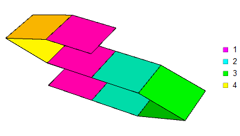
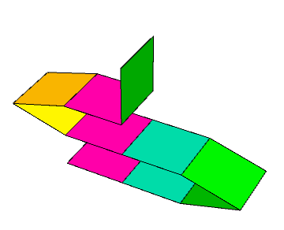
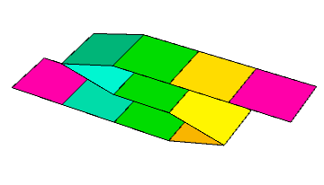
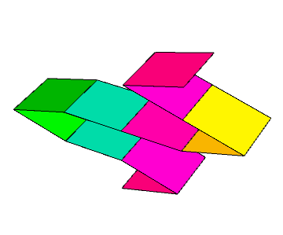

有一张长度为 $n$ 的纸带，纸带分为 $n$ 段，每段长度为 $1$，上面写有一个数字 $a_i$。我们用 $\left[ a_1, a_2, \cdots, a_n \right]$ 来表示一张 $n$ 段的纸带。
其中段与段之间可以对折，你需要对纸带进行若干次对折，使得最终状态满足：对于一个固定的位置，覆盖它的所有段上写的数字均相同。换句话说，如果第 $i$ 段折在第 $j$ 段上，则有 $a_i = a_j$。
如，纸带 $\left[ 1, 2, 3, 3, 2, 1, 4, 4, 1 \right]$ 可以折成如下形态：
给定一张长度为 $n$ 的纸带 $\left[ a_1, a_2, \cdots, a_n \right]$，求在满足上述条件下，该纸带的每个前缀纸带最多能对折几次。
折纸的正式定义如下：
对于一个给定的长度为 $n$ 的序列 $a = \left[ a_1, a_2, \cdots, a_n \right]$，定义折纸序列 $b$ 为一个长度为 $n$ 的序列，满足：
- $\forall 1 \leq i \leq n, b_i \in \left\{ -1, 1 \right\}$。
- 定义 $\displaystyle p_i = \left[ b_i = 1 \right] + \sum_{j=1}^{i-1} b_j$，则 $\forall 1 \leq i, j \leq n$，$p_i = p_j$ 蕴含 $a_i = a_j$。
你需要最大化的是表达式 $\displaystyle \sum_{i=1}^{n-1} \left[ b_i \neq b_{i+1} \right]$ 的值。
第一行包含一个正整数 $n$ ($n \leq 10^5$)，表示纸带的段数。
第二行包含 $n$ 个正整数 $a_1, a_2, \cdots, a_n$ ($1 \leq a_i \leq n$)，依次表示每段上写的数字。
输出一行，包含 $n$ 个整数，其中第 $i$ 个整数表示子纸带 $\left[ a_1, a_2, \cdots, a_i \right]$ 的最大对折次数。
首先，容易证明对于任意一种折纸方案，一定可以等价于一个连环 "Z" 字形的结构，即 $n$ 段纸的高度是单调不减的。
(ps: 其实由上文折纸的正式定义中已经默认了这一点)
考虑贪心折纸的过程，发现有的时候 (如样例四) 已经折的部分会因为接下来的颜色不同而无法覆盖到任一侧，如下图 (这个绿色段无法折到左边也无法放到右边)：
而有的时候，无论接下来纸的形态如何，前面折的部分都是不劣的。
对比这两种情形，可以观察到后面的折纸过程中有一个完整的单 "Z" 字 (青-绿-黄)。说明这个结构对这道题有着比较重要的地位。下面就来探讨这样一个结构。
定义一个非空字符串 (序列) $s$ 是单 Z 的，当且仅当存在字符串 (序列) $t$ 满足 $s = t \cdot t^R \cdot t$。如 $\left[ 1, 2, 3, 3, 2, 1, 1, 2, 3 \right]$ 是单 Z 的而 $\left[ 1, 2, 1, 2 \right]$ 不是。
定义一个非空字符串 $s$ 是本原单 Z 的，当且仅当它是单 Z 的且不包含单 Z 真子串。如 $\left[ 1, 2, 3, 3, 2, 1, 1, 2, 3 \right]$ 是本原单 Z 的而 $\left[ 1, 1, 1, 1, 1, 1 \right]$ 不是。
对于本原单 Z 字符串，有如下重要的结论：
(引理 1) 设 $s = t \cdot t^R \cdot t$ 是本原单 Z 的，那么 $s$ 只包含唯一的 (偶长度) 回文后缀 $t^R \cdot t$。
否则，设 $s$ 还有其它的回文后缀，分几种情况讨论：
$t$ 有 (可能为本身的) 回文后缀 $u \cdot u^R$。设 $t = k \cdot u \cdot u^R$。
则 $s = k \cdot \left( u \cdot u^R \cdot u \right) \cdot u^R \cdot k^R \cdot k \cdot u \cdot u^R$，有单 Z 子串 $u \cdot u^R \cdot u$，矛盾。
$t$ 不包含回文后缀，$t^R \cdot t$ 有回文后缀。
这说明 $t^R \cdot t$ 有一个长度超过其一半的回文后缀。这说明回文串 $t^R \cdot t$ 有一个长度小于 $\left| t \right|$ 的周期。
容易证明以中点为界，这个周期也一定是回文串，由周期长度 $< \left| t \right|$，可知 $t^R \cdot t$ 中包含两个完整的偶回文周期 ($u \cdot u^R \cdot u \cdot u^R$)，从而存在单 Z 子串，矛盾。
$t^R \cdot t$ 不包含回文后缀，$s$ 有回文后缀。
此时可以看成那个大的回文后缀中包含长度超过其一半的小回文后缀，转化为 (2)，矛盾。
同理可得 $s$ 只包含唯一的回文前缀 $t \cdot t^R$。
现在回到折纸。考虑一个字符串 $s$，如果它不包含任何单 Z 子串，它最终的结构是怎么样的呢？
经过简单探索后发现，最终折出来的结果，每一层的宽度是单峰的，如下图所示：
事实上，如果存在三层的宽度满足 $\mu_1 > \mu_2 < \mu_3$，则第一层的长度为 $\mu_2$ 的后缀，第二层，第三层的长度为 $\mu_2$ 的前缀就构成了一个单 Z 子串。
那么，可以得到：(推论 1) 若串 $s$ 不包含单 Z 子串且不包含任何的 (偶长度) 前缀或后缀，则 $s$ 无法对折 (即答案为 $0$)。
只需注意到不包含单 Z 子串的串的折叠形式一定如上图 (单峰)，而这种结构一定会出现 (偶长度) 的回文前缀或后缀。
现在，我们用 $w \left( a \right)$ 表示序列 $a$ 能对折的最大次数 (即答案)，就可以得到一个重要的定理：
(定理 1) 若 $s = t \cdot t^R \cdot t$ 是本原单 Z 的，则 $w \left( p \cdot s \cdot q \right) = w \left( p \cdot t \cdot q \right) + 2$。
对于一种 $p \cdot t \cdot q$ 的折纸策略，则 $t$ 满足推论 1 条件 (不包含单 Z 子串或 (偶长度) 回文前后缀)，于是 $t$ 部分一定是平铺。
那么我们只需将平铺的这部分变成 $t \cdot t^R \cdot t$，就得到一个对折次数恰好多 $2$ 的 $p \cdot s \cdot q$ 的折纸策略 $\Rightarrow \color {red} {w \left( p \cdot s \cdot q \right) \geq w \left( p \cdot t \cdot q \right) + 2}$。
反之，对于任意一个 $p \cdot s \cdot q$ 的折纸策略，由于 $t$ 部分必须平铺，因此 $t \cdot t^R \cdot t$ 至多对折了两次。
如果恰好对折了两次，那么将这部分展开即可得到对折次数恰好少 $2$ 的 $w \cdot t \cdot q$ 的折纸策略。
如果恰好对折了一次，那么也可以直接展开得到对折次数恰好少 $1$ 的 $w \cdot t \cdot q$ 的折纸策略。
如果没有对折，那么根据单 Z 串的性质也可以在展开时适当调整得到对折次数不少于 $w \cdot t \cdot q$ 的折纸策略。
即 $\color {red} {w \left( p \cdot t \cdot q \right) \geq w \left( p \cdot s \cdot q \right) - 2}$。
综上，原结论成立。
这启发我们，可以不断对原串里面的本原单 Z 子串进行压缩，最终得到一个不包含任何单 Z 子串的串 (ps: 因为每个单 Z 子串经过适当压缩后总能成为本原单 Z 子串，所以没有本原单 Z 子串时也不会有单 Z 子串)。而每压缩一次答案都恰好增加 $2$。
现在考虑对于不包含单 Z 子串的串 $s$，计算 $w \left( s \right)$ 的值。
由上面的讨论知每一层的宽度单峰 (如上图)，因此我们只需每次寻找最短的回文前/后缀，将其压缩即可。
综合上述结论，我们终于得到了一个对于任意串 $s$，求 $w \left( s \right)$ 的多项式算法了 (尽管可能是 $O \left( n^2 \right)$ 甚至 $O \left( n^3 \right)$)。
最后就是对算法进行优化。既然我们已经抽象出了模型，因此后面的部分就跟折纸没什么关系了。
首先，就是对一个串进行 "消本原单 Z 串" 的过程。
考虑动态处理，注意到消单 Z 串是一个永久的过程，不需要回溯。因此假设我们已经对 $\left[ a_1, a_{i-1} \right]$ 完成了消单 Z 串，得到串 $s$。考虑在最后添加一个字符 $c$。
显然 $s \cdot c$ 的单 Z 子串只有单 Z 后缀，且类似引理 1 的证明，可知 $s \cdot c$ 之多存在一个单 Z 后缀。
那么，这个单 Z 后缀一定是本原单 Z 后缀，因为它是 $s \cdot c$ 唯一的单 Z 子串。
怎么找到这个单 Z 后缀呢？事实上，由本原单 Z 后缀的性质知，设这个本原单 Z 后缀为 $t \cdot t^R \cdot t$，那么 $t^R \cdot t$ 是 $s \cdot c$ 的最短 (偶长度) 回文后缀。
难道我们要用回文自动机？不不不，暴力就行了，因为：
$s \cdot c$ 的 (偶长度) 回文后缀数量不超过 $\log_2 \left| s \right| + O \left( 1 \right)$。
(如果两个回文后缀满足一个超过其长度的一半，则类似引理 1 证明可知 $s \cdot c$ 存在两个完整的偶回文周期 $\Rightarrow s$ 包含单 Z 子串)
因此消本原单 Z 串的过程如下：
对 (消单 Z 串后的) 当前串 $s$ ($\left| s \right| = i$) 维护所有 (偶长度) 回文后缀长度的一半的集合，记作 $F_i$。
添加一个字符 $c$ 后，判断是否有 $1 \in F_{i+1}$，并对于 $F_i$ 中的每个元素 $x$，$O \left( 1 \right)$ 检验是否有 $x + 1 \in F_{i+1}$。
设 $\gamma$ 为 $F_i$ 中的最小元 (若 $F_i = \varnothing$ 则直接跳过这一步)，检验 $s$ 是否包含长度为 $3 \gamma$ 的本原单 Z 后缀，这可以 $O \left( 1 \right)$ 检验 —— 只需判定是否有 $\gamma \in F_{\left| s \right| - \gamma}$ 即可。
如果 $s$ 中有长度为 $3 \gamma$ 的本原单 Z 后缀，令 "消单 Z 串总数" 加一，然后消单 Z 串，即令 $s \gets s \left[ 1 .. \left| s \right| - 2 \gamma \right]$。
这部分的总时间复杂度为 $O \left( n \log n \right)$。
接下来考虑计算对于不包含单 Z 子串的串的答案 (别忘了最后加上 "消单 Z 串总数" 的两倍哦~)。
首先可以注意到一个基本事实：
(引理 2) 若 $s$ 不包含单 Z 子串，则 $w \left( s \right) \leq 2 \sqrt {\left| s \right|} + O \left( 1 \right)$。
设各层的宽度分别为 $\mu_1, \mu_2, \cdots, \mu_k$，由前讨论知 $\mu_i$ 单峰。
若 $\mu_i = \mu_{i+1}$，则可知它们一定是峰顶 —— 否则也能找到单 Z 子串。
于是 $\left| s \right| \leq \left \lfloor \dfrac {\left( k + 1 \right)^2} 4 \right \rfloor \Rightarrow w \left( s \right) = k - 1 \leq 2 \sqrt {\left| s \right|} - 2$。
也就是说它至多折 $2 \sqrt {\left| s \right|} + O \left( 1 \right)$ 次。因此我们可以尝试 "暴力模拟"，但前提是我们要在 $O \left( 1 \right)$ 时间内完成每次折叠。
对于后缀的情形，这非常简单，因为刚才我们已经维护过集合 $F_i$，表示所有 (偶长度) 回文后缀长度的一半的集合，直接拿来用即可。
对于前缀的情形，可以使用类似 DP 的思想 —— 用 $P_i$ 表示对当前 (长度为 $i$ 的) 串进行前缀折叠，折叠后的可视部分为 $\left( P_i, i \right]$，顺便用 $C_i$ 表示这部分折叠了多少次。
那么添加字符时只需检验当前整个串是不是回文串，如果是就折叠并令 $P_i \gets \dfrac {P_i + i} 2, C_i \gets C_i + 1$。
最终求答案的时候只需要将前缀和后缀的答案合并起来即可，这部分的时间复杂度为 $O \left( n \sqrt n \right)$。
结合上述两部分，可知总时间复杂度 $O \left( n \log n + n \sqrt n \right)$。
#include <bits/stdc++.h>
#define EB emplace_back
using std::cin;
using std::cout;
using std::vector;
const int N = 100054;
int s[N];
vector <int> f[N];
namespace zig {
void push(int i) {
f[i].clear();
if (s[i - 1] == s[i]) f[i].EB(1);
for (int h : f[i - 1]) if (s[i - 2 * h - 1] == s[i]) f[i].EB(h + 1);
}
int check(int i) {
if (f[i].empty()) return 0;
int h = f[i].front();
return std::binary_search(f[i - h].begin(), f[i - h].end(), h) ? h : 0;
}
}
namespace misc {
int suf[N], preP[N], preC[N];
void push(int i) {
int L;
suf[i] = (f[i].empty() ? 0 : f[i].front()), preP[i] = preP[i - 1], preC[i] = preC[i - 1];
if (!((L = i - preP[i]) & 1) && std::binary_search(f[i].begin(), f[i].end(), L >>= 1))
preP[i] += L, ++preC[i];
}
int query_suf(int i) {
int j, ret = preC[i], L = preP[i];
for (j = i; suf[j] && L < j - suf[j]; j -= suf[j]) ++ret;
return ret;
}
}
int main() {
int i, h, n, x, Z = 0, top = 0;
std::ios::sync_with_stdio(false), cin.tie(NULL);
cin >> n, *s = -1;
for (i = 0; i < n; ++i) {
cin >> x, s[++top] = x, zig::push(top);
if ((h = zig::check(top))) ++Z, top -= 2 * h;
else misc::push(top);
cout << 2 * Z + misc::query_suf(top) << (i == n - 1 ? '\n' : ' ');
}
return 0;
}
坑1：搞清楚维护的是回文串长度还是长度的一半，计算时不要混淆。
坑2：在检验等相关操作时注意数组越界问题，比如 $F_i = \varnothing$ 时不要访问元素。